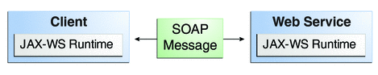

Creating a Simple Web Service and Clients with JAX-WS
This section shows how to build and deploy a simple web service and two clients, an application client and a web client. The source code for the service is in tut-install/examples/jaxws/helloservice/, and the clients are in tut-install/examples/jaxws/appclient/ and tut-install/examples/jaxws/webclient/.
Figure 12-1 illustrates how JAX-WS technology manages communication between a web service and client.
Figure 12-1 Communication between a JAX-WS Web Service and a Client
The starting point for developing a JAX-WS web service is a Java class annotated with the javax.jws.WebService annotation. The @WebService annotation defines the class as a web service endpoint.
A service endpoint interface or service endpoint implementation (SEI) is a Java interface or class, respectively, that declares the methods that a client can invoke on the service. An interface is not required when building a JAX-WS endpoint. The web service implementation class implicitly defines an SEI.
You may specify an explicit interface by adding the endpointInterface element to the @WebService annotation in the implementation class. You must then provide an interface that defines the public methods made available in the endpoint implementation class.
These are the basic steps for creating a web service and client:
Code the implementation class.
Compile the implementation class.
Package the files into a WAR file.
Deploy the WAR file. The web service artifacts (which are used to communicate with clients) are generated by the GlassFish Server during deployment.
Code the client class.
Use a wsimport Ant task to generate and compile the web service artifacts needed to connect to the service.
Compile the client class.
Run the client.
If you use NetBeans IDE to create a service and client, the IDE performs the wsimport task for you.
The sections that follow cover these steps in greater detail.
Requirements of a JAX-WS Endpoint
JAX-WS endpoints must follow these requirements:
The implementing class must be annotated with either the javax.jws.WebService or javax.jws.WebServiceProvider annotation.
The implementing class may explicitly reference an SEI through the endpointInterface element of the @WebService annotation, but is not required to do so. If no endpointInterface is specified in @WebService, an SEI is implicitly defined for the implementing class.
The business methods of the implementing class must be public, and must not be declared static or final.
Business methods that are exposed to web service clients must be annotated with javax.jws.WebMethod.
Business methods that are exposed to web service clients must have JAXB-compatible parameters and return types. See JAXB default data type bindings.
The implementing class must not be declared final and must not be abstract.
The implementing class must have a default public constructor.
The implementing class must not define the finalize method.
The implementing class may use the javax.annotation.PostConstruct or javax.annotation.PreDestroy annotations on its methods for life cycle event callbacks.
The @PostConstruct method is called by the container before the implementing class begins responding to web service clients.
The @PreDestroy method is called by the container before the endpoint is removed from operation.
Coding the Service Endpoint Implementation Class
In this example, the implementation class, Hello, is annotated as a web service endpoint using the @WebService annotation. Hello declares a single method named sayHello, annotated with the @WebMethod annotation. @WebMethod exposes the annotated method to web service clients. The sayHello method returns a greeting to the client, using the name passed to it to compose the greeting. The implementation class also must define a default, public, no-argument constructor.
package helloservice.endpoint;
import javax.jws.WebService;
import javax.jws.webMethod;
@WebService
public class Hello {
private String message = new String("Hello, ");
public void Hello() {
}
@WebMethod
public String sayHello(String name) {
return message + name + ".";
}
}
Building, Packaging, and Deploying the Service
You can build, package, and deploy the helloservice application using either NetBeans IDE or Ant.
To Build, Package, and Deploy the Service Using NetBeans IDE
To build, package, and deploy the helloservice example using NetBeans IDE, follow these steps..
- In NetBeans IDE, select File→Open Project.
- In the Open Project dialog, navigate to tut-install/examples/jaxws/.
- Select the helloservice folder.
- Select the Open as Main Project check box.
- Click Open Project.
- In the Projects tab, right-click the helloservice project and select Deploy.
This command builds and packages the application into helloservice.war, located in tut-install/examples/jaxws/helloservice/dist/, and deploys this WAR file to the GlassFish Server.
Next Steps
You can view the WSDL file of the deployed service by requesting the URL hhttp://localhost:8080/helloservice/HelloService?wsdl in a web browser. Now you are ready to create a client that accesses this service.
To Build, Package, and Deploy the Service Using Ant
To build, package, and deployhelloservice using Ant, follow these steps.
- In a terminal window, go to the tut-install/examples/jaxws/helloservice/ directory.
- Type the following:
ant
This command calls the default target, which builds and packages the application into an WAR file, helloservice.war, located in the dist directory.
- Make sure the GlassFish Server is started.
- Type the following:
ant deploy
Next Steps
You can view the WSDL file of the deployed service by requesting the URL http://localhost:8080/helloservice/HelloService?wsdl in a web browser. Now you are ready to create a client that accesses this service.
Testing the Methods of a Web Service Endpoint
GlassFish Server allows you to test the methods of a web service endpoint.
To Test the Service Without a Client
To test the sayHello method of HelloService, follow these steps.
- Open the web service test interface by typing the following URL in a
web browser:
http://localhost:8080/helloservice/HelloService?Tester
- Under Methods, type a name as the parameter to the sayHello method.
- Click the sayHello button.
This takes you to the sayHello Method invocation page.
Under Method returned, you’ll see the response from the endpoint.
A Simple JAX-WS Application Client
The HelloAppClient class is a standalone application client that accesses the sayHello method of HelloService. It makes this call through a port, a local object that acts as a proxy for the remote service. The port is created at development time by the wsimport task, which generates JAX-WS portable artifacts based on a WSDL file.
Coding the Application Client
When invoking the remote methods on the port, the client performs these steps:
Uses the generated helloservice.endpoint.HelloService class, which represents the service at the URI of the deployed service’s WSDL file.
import helloservice.endpoint.HelloService; import javax.xml.ws.WebServiceRef; public class HelloAppClient { @WebServiceRef(wsdlLocation = "META-INF/wsdl/localhost_8080/helloservice/HelloService.wsdl") private static HelloService service;Retrieves a proxy to the service, also known as a port, by invoking getHelloPort on the service.
helloservice.endpoint.Hello port = service.getHelloPort();
The port implements the SEI defined by the service.
Invokes the port’s sayHello method, passing a string to the service.
return port.sayHello(arg0);
Here is the full source of HelloAppClient, which is located in the tut-install/examples/jaxws/appclient/src/appclient/ directory.
package appclient;
import helloservice.endpoint.HelloService;
import javax.xml.ws.WebServiceRef;
public class HelloAppClient {
@WebServiceRef(wsdlLocation =
"META-INF/wsdl/localhost_8080/helloservice/HelloService.wsdl")
private static HelloService service;
/**
* @param args the command line arguments
*/
public static void main(String[] args) {
System.out.println(sayHello("world"));
}
private static String sayHello(java.lang.String arg0) {
helloservice.endpoint.Hello port = service.getHelloPort();
return port.sayHello(arg0);
}
}
Building and Running the Application Client
You can build and run the appclient application using either NetBeans IDE or Ant. To build the client, you must first have deployed helloservice, as described in Building, Packaging, and Deploying the Service.
To Build and Run the Application Client Using NetBeans IDE
To build and run the client using NetBeans IDE, follow these steps.
- In NetBeans IDE, select File→Open Project.
- In the Open Project dialog, navigate to tut-install/examples/jaxws/.
- Select the appclient folder.
- Select the Open as Main Project check box.
- Click Open Project.
- In the Projects tab, right-click the appclient project and select Run.
You will see the output of the application client in the Output pane.
To Build and Run the Application Client Using Ant
To build and run the client using Ant, follow these steps.
- In a terminal window, navigate to tut-install/examples/jaxws/appclient/.
- Type the following command:
ant
This command calls the default target, which runs the wsimport tasks and builds and packages the application into a JAR file, appclient.jar, located in the dist directory.
- To run the client, type the following command:
ant run
A Simple JAX-WS Web Client
HelloServlet is a servlet that, like the Java client, calls the sayHello method of the web service. Like the application client, it makes this call through a port.
Coding the Servlet
To invoke the method on the port, the client performs these steps:
Imports the HelloService endpoint and the WebServiceRef annotation:
import helloservice.endpoint.HelloService; ... import javax.xml.ws.WebServiceRef;
Defines a reference to the web service by specifying the WSDL location:
@WebServiceRef(wsdlLocation = "WEB-INF/wsdl/localhost_8080/helloservice/HelloService.wsdl")
Declares the web service, then defines a private method that calls the sayHello method on the port:
private HelloService service; ... private String sayHello(java.lang.String arg0) { helloservice.endpoint.Hello port = service.getHelloPort(); return port.sayHello(arg0); }In the servlet, calls this private method:
out.println("<p>" + sayHello("world") + "</p>");
The significant parts of the HelloServlet code follow. The code is located in the tut-install/examples/jaxws/src/java/webclient directory.
package webclient;
import helloservice.endpoint.HelloService;
import java.io.IOException;
import java.io.PrintWriter;
import javax.servlet.ServletException;
import javax.servlet.annotation.WebServlet;
import javax.servlet.http.HttpServlet;
import javax.servlet.http.HttpServletRequest;
import javax.servlet.http.HttpServletResponse;
import javax.xml.ws.WebServiceRef;
@WebServlet(name="HelloServlet", urlPatterns={"/HelloServlet"})
public class HelloServlet extends HttpServlet {
@WebServiceRef(wsdlLocation =
"WEB-INF/wsdl/localhost_8080/helloservice/HelloService.wsdl")
private HelloService service;
/**
* Processes requests for both HTTP <code>GET</code>
* and <code>POST</code> methods.
* @param request servlet request
* @param response servlet response
* @throws ServletException if a servlet-specific error occurs
* @throws IOException if an I/O error occurs
*/
protected void processRequest(HttpServletRequest request,
HttpServletResponse response)
throws ServletException, IOException {
response.setContentType("text/html;charset=UTF-8");
PrintWriter out = response.getWriter();
try {
out.println("<html>");
out.println("<head>");
out.println("<title>Servlet HelloServlet</title>");
out.println("</head>");
out.println("<body>");
out.println("<h1>Servlet HelloServlet at " +
request.getContextPath () + "</h1>");
out.println("<p>" + sayHello("world") + "</p>");
out.println("</body>");
out.println("</html>");
} finally {
out.close();
}
}
// doGet and doPost methods, which call processRequest, and
// getServletInfo method
private String sayHello(java.lang.String arg0) {
helloservice.endpoint.Hello port = service.getHelloPort();
return port.sayHello(arg0);
}
}
Building and Running the Web Client
You can build and run the webclient application using either NetBeans IDE or Ant. To build the client, you must first have deployed helloservice, as described in Building, Packaging, and Deploying the Service.
To Build and Run the Web Client Using NetBeans IDE
To build and run webclient, follow these steps.
- In NetBeans IDE, select File→Open Project.
- In the Open Project dialog, navigate to tut-install/examples/jaxws/.
- Select the webclient folder.
- Select the Open as Main Project check box.
- Click Open Project.
- In the Projects tab, right-click the webclient project and select Deploy.
This task runs the wsimport tasks, builds and packages the application into a WAR file, webclient.war, located in the dist directory, and deploys it to the server.
- In a web browser, navigate to the following URL:
http://localhost:8080/webclient/HelloServlet
The output of the sayHello method appears in the window.
Next Steps
After running both clients, right-click all three projects and select Undeploy, then Clean.
To Build and Run the Web Client Using Ant
To build and run the client using Ant, follow these steps.
- In a terminal window, navigate to tut-install/examples/jaxws/webclient/.
- Type the following command:
ant
This command calls the default target, which runs the wsimport tasks, then builds and packages the application into a WAR file, webclient.war, located in the dist directory.
- Type the following command:
ant deploy
This task deploys the WAR file to the server.
- In a web browser, navigate to the following URL:
http://localhost:8080/webclient/HelloServlet
The output of the sayHello method appears in the window.
Next Steps
After running both clients, undeploy all three applications by typing ant undeploy in the helloservice, appclient, and webclient directories, respectively. Then, in each project directory, type ant clean.